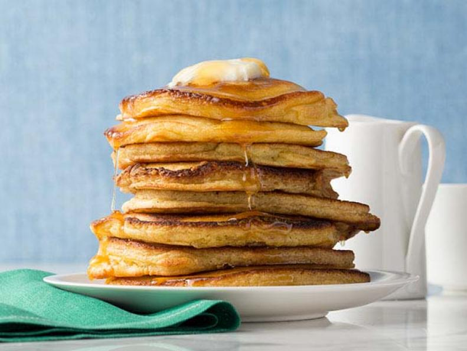
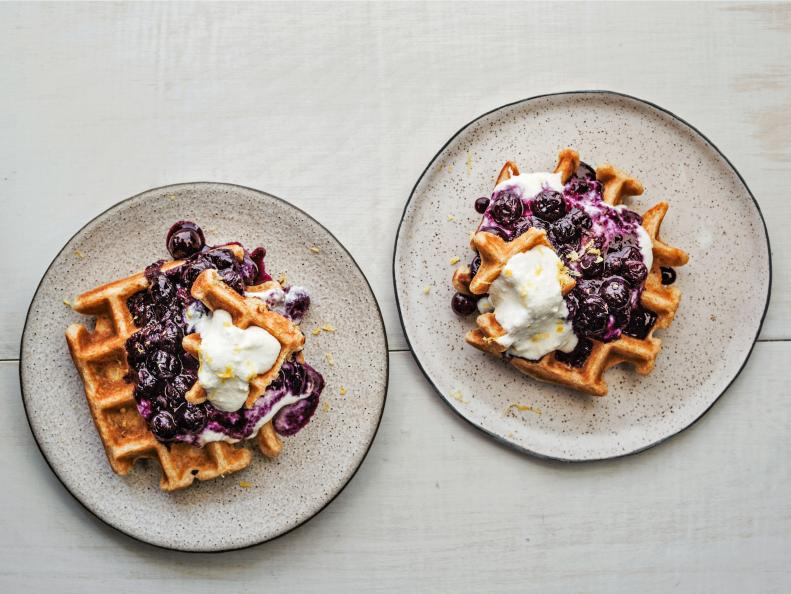

3 oz. Cheddar cheese, coarsely grated (about 1 cup)
3 c. baby kale
6 burrito-size flour tortillas (10-inch)
Directions
Heat 1 tablespoon oil in large skillet on medium. Add sweet potato and cook,
stirring occasionally, until beginning to brown, 5 to 6 minutes. Add 2 tablespoons water,
cover, and cook until tender, 2 minutes.
Add onion, poblano, and 1/4 teaspoon each salt and pepper; cover and cook,
stirring occasionally, until tender, 3 to 4 minutes. Stir in chili powder and
cook until fragrant, 1 minute. Stir in black beans and remove from heat.
Meanwhile, in bowl, beat eggs with 1/2 teaspoon each salt and pepper. Heat
remaining tablespoon oil in large nonstick skillet on medium. Add eggs and cook,
stirring with rubber spatula every few seconds, to desired doneness, 2 to 3
minutes for soft-scrambled eggs.
Divide filling, cheese, and kale among tortillas. For each burrito, fold sides
over filling, then roll up from bottom.
If desired, individually wrap burritos with plastic and freeze up to 2 months.
To reheat, remove and discard plastic. Wrap burrito in damp paper towel and microwave
until heated through, about 3 minutes. Heat large nonstick skillet on medium and cook
burrito until golden brown and crisp, 1 to 2 minutes per side.
Pancakes

Ingredient
1 1/2 cups all-purpose flour
3 tablespoons sugar
1 tablespoon baking powder
1/4 teaspoon salt
1/8 teaspoon freshly ground nutmeg
2 large eggs, at room temperature
1 1/4 cups milk, at room temperature
1/2 teaspoon pure vanilla extract
3 tablespoons unsalted butter, plus more as needed
3 c. baby kale
1/2 cups of esen vanilla
Directions
In a large bowl, whisk together the flour, sugar, baking powder, salt, and nutmeg.
In another bowl, beat the eggs and then whisk in the milk and vanilla.
Melt the butter in a large cast iron skillet or griddle over medium heat.
Whisk the butter into the milk mixture. Add the wet ingredients to the flour mixture,
and whisk until a thick batter is just formed.
Keeping the skillet at medium heat, ladle about 1/4 cup of the batter onto the skillet,
to make a pancake. Make 1 or 2 more pancakes, taking care to keep them evenly spaced apart.
Cook, until bubbles break the surface of the pancakes, and the undersides are golden brown, about 2 minutes.
Flip with a spatula and cook about 1 minute more on the second side. Serve immediately or transfer to a platter and cover loosely with foil to keep warm.
Repeat with the remaining batter, adding more butter to the skillet as needed.
Procedure for adding fruit to pancakes: Once the bubbles break the surface of the pancakes, scatter the surface with sliced or diced fruit, or chocolate chips,
nuts, etc. Flip with a spatula and cook for 1 minute more, being careful not to burn toppings
Waffle Blueberry

Ingredient
1 cup part-skim ricotta
1 tablespoon confectioners' sugar
1 teaspoon grated lemon zest, plus more for garnish
1 teaspoon fresh lemon juice
1 pint fresh blueberries, or 1 pound frozen blueberries, thawed
2 tablespoons honey or pure maple syrup
1 teaspoon fresh lemon juice
2 large eggs
1 cup whole-wheat flour
1 tablespoon granulated sugar
2 cups low-fat buttermilk
Directions
Make the ricotta cream: In a small bowl, combine the ricotta, confectioners' sugar,
lemon zest and lemon juice and whisk until light and fluffy. Cover and refrigerate for
at least 30 minutes and up to 2 hours to allow the flavors to meld.
Make the compote: In a small saucepan, combine the blueberries, 1/4 cup water and the
honey and bring to a simmer over medium heat. Cook until the mixture thickens, about 7 minutes.
Transfer to a bowl, add the lemon juice and let cool at least slightly.
Make the waffles: Preheat the oven to 275 degrees F; set a rack on a baking sheet and put in the oven.
In a medium bowl, whisk together the flours, granulated sugar, baking powder, baking soda and salt.
In a large bowl, whisk together the buttermilk, butter, eggs and lemon zest. Add the flour mixture and mix
just until the batter is combined. Let rest for 15 minutes.
Heat a waffle iron according to the manufacturer's instructions; coat with nonstick spray.
Pour the batter onto the iron (the amount depends on the size of the iron), leaving a 1/2-inch border on all sides.
Close the iron and cook until the waffle is golden brown and crisp, 3 to 5 minutes. Transfer to the rack in the oven
to keep warm; repeat with the remaining batter.
To serve, top the waffles with the blueberry compote and ricotta cream. Garnish with lemon zest.